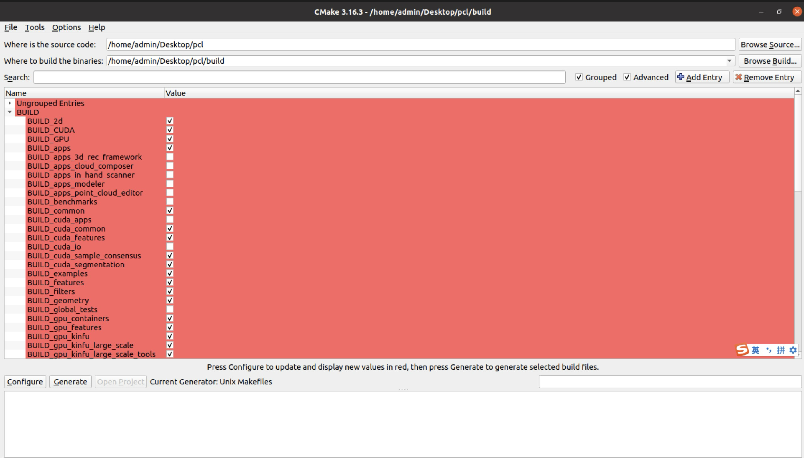

前言
pcl是一个c++编写的点云数据处理库。
大量点云数据处理通常需要消耗CPU大量时间，而使用cuda可以加速计算。
目前pcl最新版本（1.14）支持cuda计算加速（尽管还不完善），但是需要额外的步骤进行编译安装。
如果要编译安装的是PCL普通版本（即只使用CPU进行计算的版本）比较简单，在此略过。
本文介绍PCL-CUDA的编译安装。
环境
我的OS是Ubuntu，详细硬件环境如下图，通过jtop命令获得
我的软件环境：
| software | cmd | ||
|---|---|---|---|
| cuda | 11.4 | nvcc —version | |
| gcc | 9 | gcc -dumpversion | |
| clang | 10 | clang —version | |
| Eigen | 3.3.7 | dpkg -s libeigen3-dev \ | grep Version |
| cmake vtk qt |
安装命令自己找，大部分都是apt install，这里找到一个比较全的
sudo apt-get update |
编译安装PCL
下载PCL源码，我的是pcl-1.14。
git clone https://github.com/PointCloudLibrary/pcl.git |
这里注意-DBUILD_GPU=ON -DBUILD_CUDA=ON
在make的时候 -j2指定使用2个线程make，如果机器好，可以把2改大一点，加速编译。
或者打开cmake-gui图形化界面，选择source和build目录，
把BUILD下和gpu or cuda有关的勾选上，点按configue和generate，
如果缺什么cmake会飘红，补全后再次点按configue和generate即可。
以下是我的勾选

踩坑
在make的时候报错，报错内容和原因忘记了，但是我修改了pcl的源码。
一个是修改了源码中的头文件，并删除了一部分代码，详见下两图
一个是增加了对应的头文件sse2neon.h，该文件下载地址：
https://github.com/DLTcollab/sse2neon/blob/master/sse2neon.h
这么改的具体报错忘记了……
现在看来，这部分代码也不是必须的，只要在cmake的时候指定cmake -DBUILD_gpu_people=OFF ..就行。
验证编译是否成功
在源码中，找到gpu/examples/segmentation/src/seg.cpp，这是一个比较cpu和gpu对点云进行欧式聚类的该代码引入了pcl/gpu的头文件
如果能编译运行seg.cpp成功，说明pcl-gpu版本安装成功。

不过我在执行代码得到的结果发现，使用CPU的效率反而会更高。
检查代码发现，在使用CPU进行聚类的时候使用的searchMethon是kdtree，而使用GPU进行聚类的时候使用的searchMethon是octree。后续文章细说。